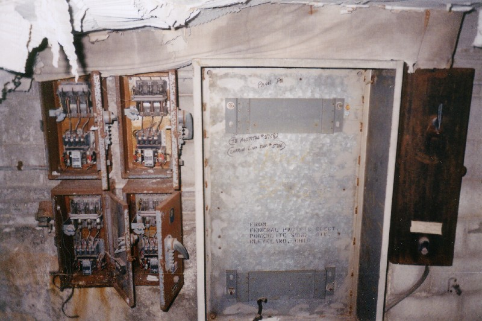

The roof of the TB hospital is easy to reach; one of the staircases goes right up to it. There's a little room with two different floor levels at the summit of the stairs, and the door to access the roof is gone.
This room seems to have been a control station for the building's electrical systems, with the elevator controls, breakers, and the big industrial fusebox on the wall. The side of the fuse box is the only place we found the words "Lima TB Hospital" at all--written in marker right on the metal. It also says "#3758", but who knows what that means.

Finally, the roof itself. It's not high enough to see very far, but on the plus side, you're not at risk of being seen yourself. This is ultra rare in an abandoned building, and it's one of the things that make it one of the "safest" I've been to. Of course, "safe" is quite relative, and there are many dangers inherent in exploring a place like this. One issue I can put to rest right now is the risk of actually catching tuberculosis. Believe it or not, some people have asked me if this possibility exists. Even if the germs weren't long gone (which they are), TB is now easily cured with antibiotics.
Speaking of dangerous things, you can tell here that one section of the hospital roof is in much worse shape than the others. You most definitely would not want to walk on it. Even when you're in the top-floor rooms in this section, you can tell that the roof is falling to pieces. It seems to be more badly water-damaged than the rest of the building; entire sections have disintegrated and fallen through, and what's left is very saggy. I don't know why this one section fared so badly, though, because the rest of the roof seems quite sturdy. Plants have sprouted up in the loose gravel, but there's not a hole in sight.
So there you have it. One of the best abandoned buildings I've come across in a long time, and not terribly risky to explore, either. I've been meaning to add a section for this essential piece of forgotten Lima history for some time. If you have any information to add to what I've got listed, please don't hesitate to get in touch with me.
Back